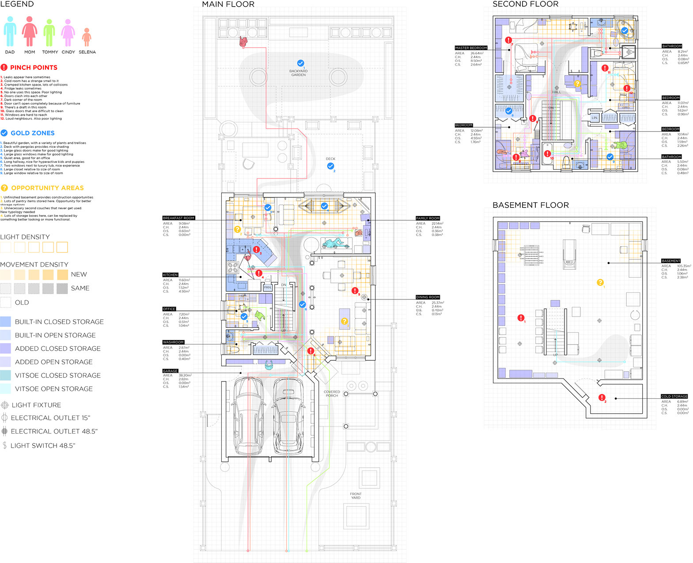
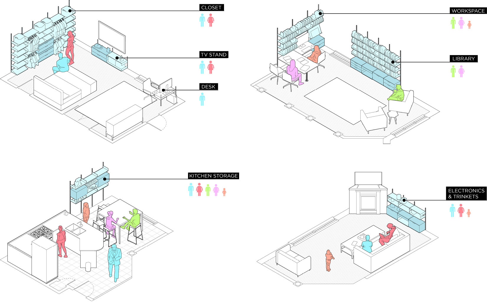
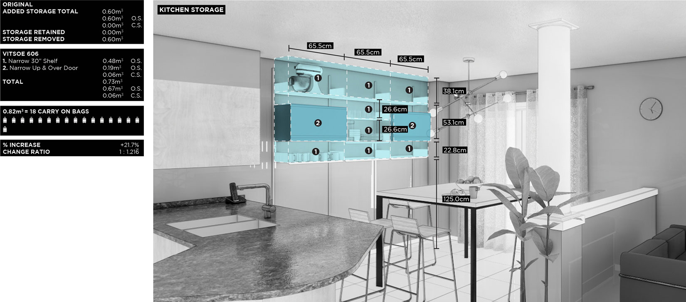
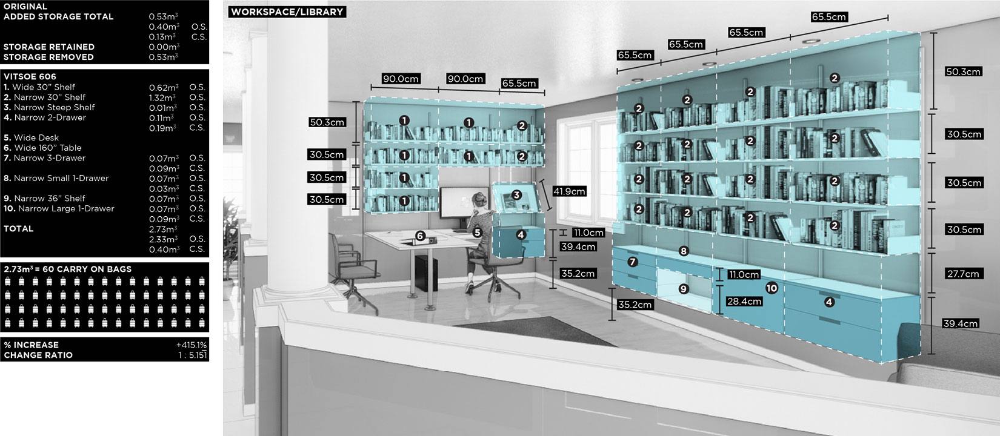
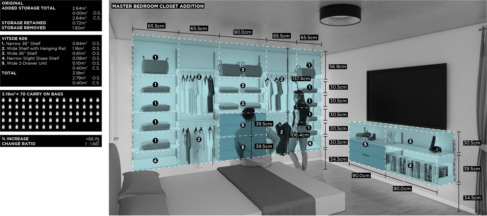
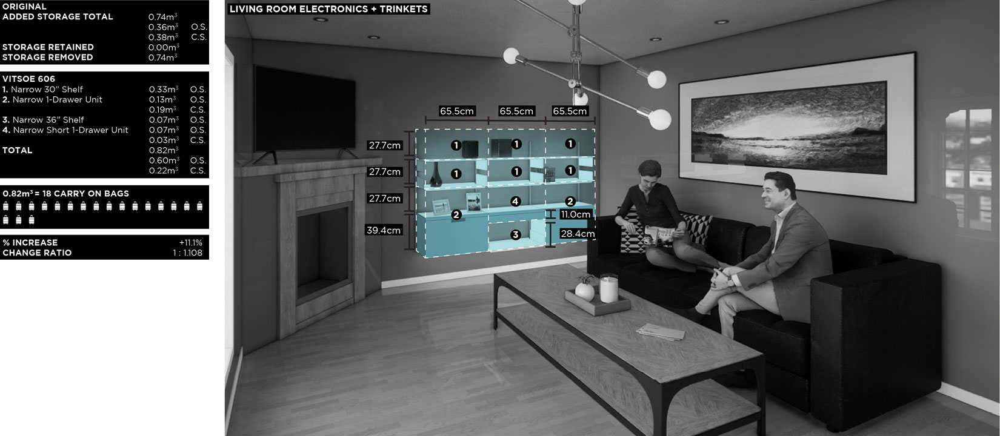

| 2102 | [Off] The Shelf | Design |
As part of a research based design studio on retrofit architecture, this project begins as a research study of my own domestic space, examining and visualizing patterns of movement and use throughout the occupants’ day in plan.
Using these observations as a point of departure, (Off) The Shelf employs the use of a COTS (commercial off-the-shelf) open system known as the Vitsoe 606 system to address a variety of issues currently plaguing the home. The implementation of the COTS system addresses issues of inefficient storage, lack of occupancy and spatially uncomfortable areas of the home. These changes and their effects are mapped out in plan and its metrics are recorded in a corresponding metric tracker.
Course: 3B Option Studio, Re:New
Course Instructor: Jonathan Enns, University of Waterloo
Recognition: Outstanding Design Award (3B)

Functional and Behavioural Mapping Plans

Adaptation Isometrics




Adaptation Metrics